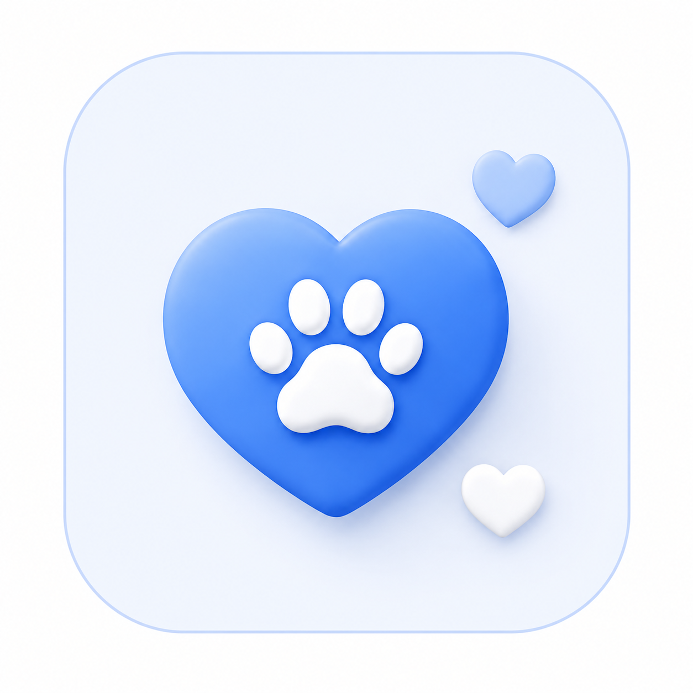

입양 절차 안내
입양은 이렇게 진행돼요
입양 신청부터 상담, 만남까지 반려동물 입양 절차를 단계별로 확인해보세요.
01

입양신청
관심 있는 보호동물을
선택하고 입양 신청서를 작성합니다.
02

상담진행
보호센터 담당자와
입양 상담을 진행합니다.
03

방문 및 만남
보호동물을 직접 만나고
교감하는 시간을 가집니다.
04

가족이 되기
입양 완료 후
새로운 가족이 됩니다.